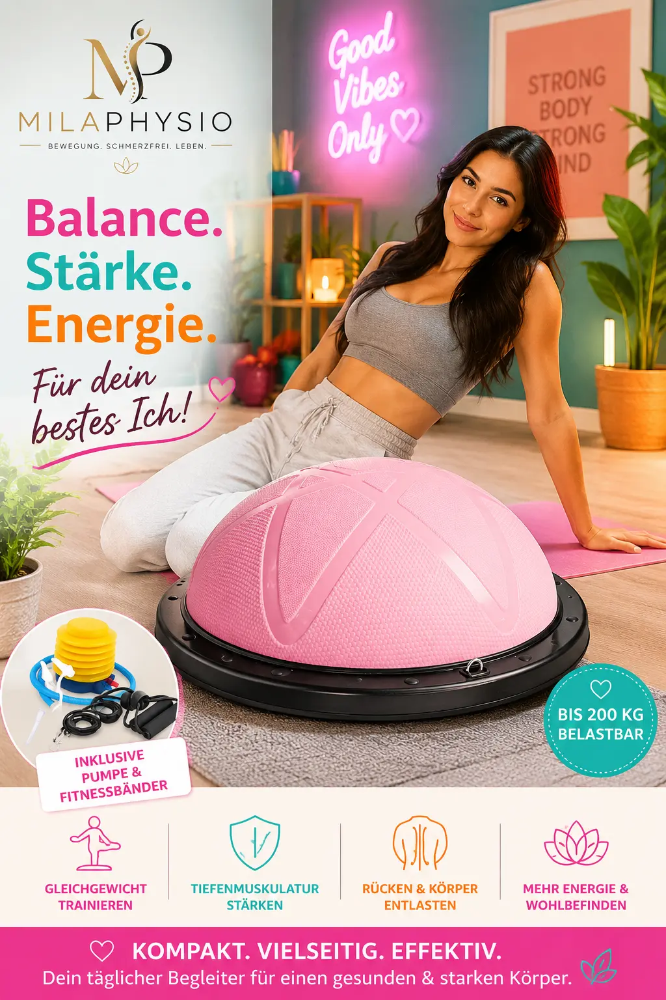

DH FitLife Balance Ball
Ein vielseitiges Trainingsgerät für Gleichgewicht, Stabilität, Koordination und funktionelle Übungen zu Hause.
Bei Amazon kaufenMeine Einschätzung als Physiotherapeutin
Einen Balance Ball finde ich besonders interessant, weil er verschiedene Trainingsmöglichkeiten miteinander verbindet. Im Gegensatz zu klassischen Kraftübungen kann das Training auf einer instabilen Unterlage zusätzliche Anforderungen an Gleichgewicht und Körperkontrolle stellen.
Aus physiotherapeutischer Sicht können solche Übungen sinnvoll sein, wenn Koordination, Stabilität und Körperwahrnehmung gezielt trainiert werden sollen.
Der DH FitLife Balance Ball bietet dabei den Vorteil, dass er nicht nur für Gleichgewichtsübungen verwendet werden kann. Je nach Übung lässt er sich auch in ein funktionelles Ganzkörpertraining integrieren.
Für wen kann ein Balance Ball interessant sein?
Ein Balance Ball kann für unterschiedliche Trainingsziele eingesetzt werden. Die Übungen sollten immer an das individuelle Leistungsniveau angepasst werden.
Gleichgewicht
Übungen auf einer instabilen Unterlage können das Gleichgewicht und die Körperkontrolle herausfordern.
Koordination
Verschiedene Bewegungen können genutzt werden, um die Koordination gezielt zu trainieren.
Krafttraining
Der Ball kann in verschiedene funktionelle Kraftübungen integriert werden.
Bewegung im Alltag
Eine gute Körperkontrolle kann eine wichtige Grundlage für viele alltägliche Bewegungen sein.
Fitness
Der Balance Ball eignet sich für abwechslungsreiche Trainingseinheiten zu Hause.
Training zu Hause
Durch seine vielseitige Verwendung kann er platzsparend in das Training integriert werden.
Wann würde ich einen Balance Ball empfehlen?
Ich würde einen Balance Ball vor allem Menschen empfehlen, die ihr Training abwechslungsreicher gestalten und Gleichgewicht, Koordination oder funktionelle Kraft gezielt trainieren möchten.
Besonders interessant für
- Gleichgewichts- und Koordinationstraining
- funktionelles Training
- allgemeines Fitnesstraining
- Training zu Hause
- abwechslungsreiche Übungen
Was ich beachten würde
- Übungen sollten dem eigenen Leistungsniveau entsprechen.
- Bei stark eingeschränktem Gleichgewicht zunächst mit Unterstützung trainieren.
- Bei akuten Schmerzen zuerst die Ursache abklären lassen.
- Auf einen sicheren und rutschfesten Untergrund achten.
Vorteile und mögliche Grenzen
Vorteile
- Vielseitig einsetzbar
- Training von Gleichgewicht und Stabilität
- Kann in viele Übungen integriert werden
- Für das Training zu Hause geeignet
- Ermöglicht abwechslungsreiche Übungen
Mögliche Grenzen
- Nicht jede Übung ist für Anfänger geeignet.
- Instabile Übungen können bei falscher Ausführung unsicher sein.
- Der Ball ersetzt keine individuelle physiotherapeutische Anleitung.
Wie kann man den Balance Ball verwenden?
Der Balance Ball kann für unterschiedliche Übungen eingesetzt werden. Dazu gehören beispielsweise Gleichgewichtsübungen, Kniebeugen, Ausfallschritte oder Übungen zur Rumpfstabilität.
Gerade bei Übungen auf einer instabilen Unterlage sollte zunächst mit einfachen Bewegungen begonnen werden. Die Schwierigkeit kann anschließend schrittweise erhöht werden.
Für Anfänger empfehle ich, zunächst Übungen in der Nähe einer stabilen Unterstützung durchzuführen.
Mein Fazit
Der DH FitLife Balance Ball ist für mich vor allem deshalb interessant, weil er mehrere Trainingsformen miteinander verbindet.
Wer Gleichgewicht, Koordination, Stabilität und funktionelle Kraft trainieren möchte, kann damit viele abwechslungsreiche Übungen durchführen.
Entscheidend ist wie immer die richtige Übungsauswahl und eine saubere Ausführung. Bei bestehenden Beschwerden sollte das Training individuell angepasst werden.
Hinweis: Diese Seite enthält Affiliate-Links. Wenn Sie über einen solchen Link einkaufen, kann ich eine Provision erhalten. Für Sie entstehen dadurch keine zusätzlichen Kosten. Meine Empfehlungen basieren auf meiner persönlichen Einschätzung und ersetzen keine individuelle medizinische Beratung.